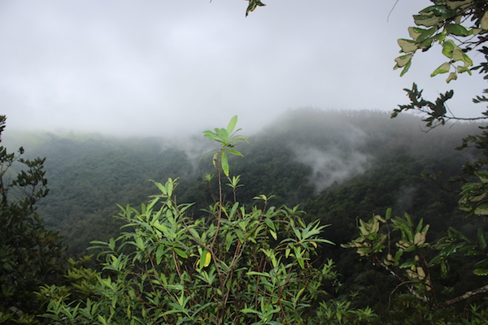

<div class="my-app-tab-content">

  <div id='exploreContentTab'>

    <div class="col-md-12" *ngIf="location === 'Sakaleshpur'">

      <div class="place-header">
        <span class="location-elem">{{location}} (Nov 2017)</span>
        <span class="number-of-days-elem">2 Nights 3 Days</span>
        <h3 class="striked-element">
          
        </h3>
      </div>

      <div class="place-contents">
        <p class="place-desc">
          Sakleshpur is around 220kms from Bangalore. This route is ideal if you enjoy meeting the nature, finding a hidden waterfall,
          trekking the hills and if a paddy field excites you!
          <br> Some more short description about the place.
          <br>
          <br> Winter months (November-February) are ideal as the weather has cooled down and it’s easier to explore. Monsoon
          months ( July-August) work best as the place leaves you spellbound with its beauty and the breathtaking water falls.
        </p>

        <!-- Image Grid -->
        <div class="img-row">
          <div class="img-column">
            
            
            
            
          </div>
          <div class="img-column">
            
            
            
            
          </div>
          <div class="img-column">
            
            
            
          </div>
          <div class="img-column">
            
            
            
            
          </div>
        </div>

        <div class="place-itinerary">
          <h3 class="itinerary-heading">Itinerary</h3>
          <mat-vertical-stepper>
            <ng-template matStepperIcon="edit">
              <mat-icon>check</mat-icon>
            </ng-template>
            <ng-template matStepperIcon="done">
              <mat-icon>check</mat-icon>
            </ng-template>
            <mat-step label="Day 1">
              <p>
                We drove straight to Sakleshpur. It’s a 4 hour drive and the road via Hassan is very good. We left Bangalore around 7am and
                reached the resort by 11:30am.
                <br>
                <br>
                <b>Accommodation </b> We were unable to get an accommodation of our choice since this was planned at a last
                minute. We stayed at a homestay called
                <a href="http://mugilu.com/" target="_blank">MUGILU</a> and we were never disappointed with this. This is a great place to stay which has 4 independent
                cottages amidst the ten acre coffee and pepper plantation. It is recommended to book a month before if you
                are visiting on a weekend.
                <br>
                <br>
                <b>Explore </b> The gorgeous Mallalli Falls is around 1hour drive from
                <a href="http://mugilu.com/" target="_blank">MUGILU</a>. This is situated in the northern part of Kodagu district. This water fall is amidst of the lush
                green hills. One has to go 600 steps down to reach the falls. Climbing back will tire you to the core. Carry
                water as there are no shops in between which serve you snacks or water.
                <br> After Mallalli falls, visit the famous Bisle Ghat which is again an hour journey. Bisle is a mountain pass,
                part of Western Ghats connecting Kukke Subramanya with Kodagu. The area has thick evergreen forests and the
                view is enchanting. Visit during the evening time so that you can enjoy some cozy winds. The view point is
                superbly built which offers breath taking views of the Western Ghats.
              </p>
            </mat-step>
            <mat-step label="Day 2">
              Day 2
            </mat-step>
            <mat-step label="Day 3">
              Day 3
            </mat-step>
          </mat-vertical-stepper>
        </div>

      </div>

    </div>

  </div>

</div>